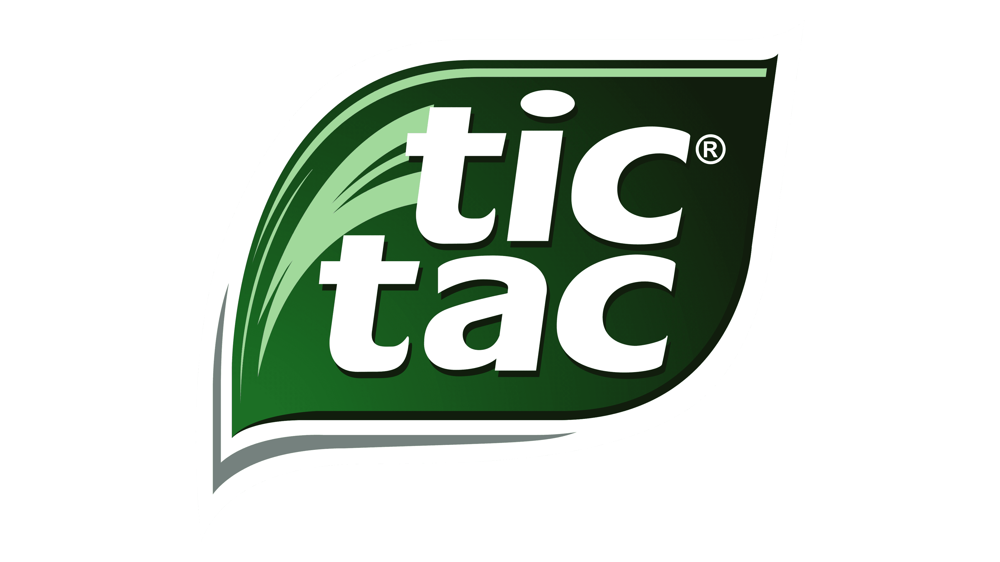
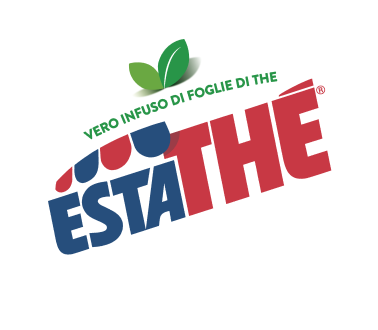
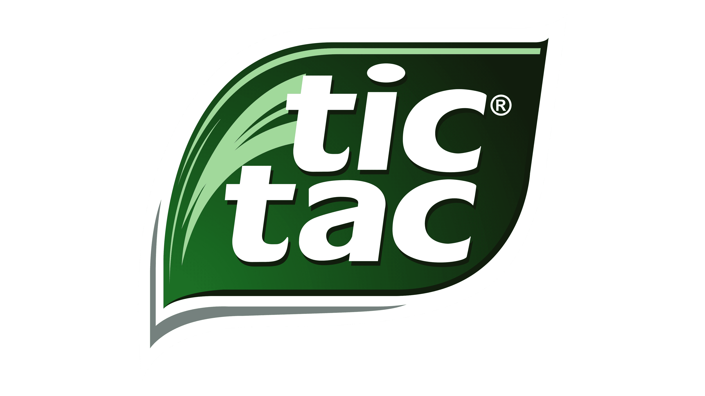
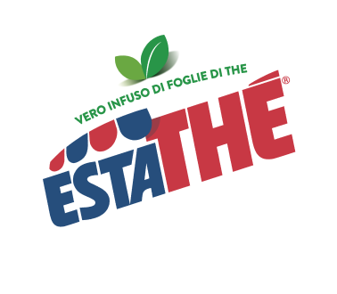

1946 – Pasta Gianduja
Il primo prodotto Ferrero: un’antenata della Nutella. Venduta come panetto di crema alle nocciole.
 



Il primo prodotto Ferrero: un’antenata della Nutella. Venduta come panetto di crema alle nocciole.
Nasce la leggendaria crema spalmabile che conquisterà il mondo.
Le iconiche caramelline alla menta in scatola trasparente.

Il cioccolato che nasconde una sorpresa. Un'idea geniale per i bambini.
Simbolo di eleganza, perfetto per le occasioni speciali.
Merendina con pan di spagna, bagna all’arancia e copertura al cioccolato.
Snack croccante e cremoso che conquista grandi e piccoli.
Cioccolatino ripieno di vero caffè espresso liquido. Energico e unico.
Confetto con cocco, mandorla e crema al latte. Elegante e delicato.
Variante della Kinder Sorpresa con crema e sorpresa separati. Più sicura d’estate.
Ghiaccioli a base di Estathé: la versione estiva della bevanda Ferrero.
.png)
Biscotti croccanti ripieni di Nutella. Subito diventati un best-seller.
Cialda croccante ripiena di Nutella. Pratica, leggera e deliziosa.